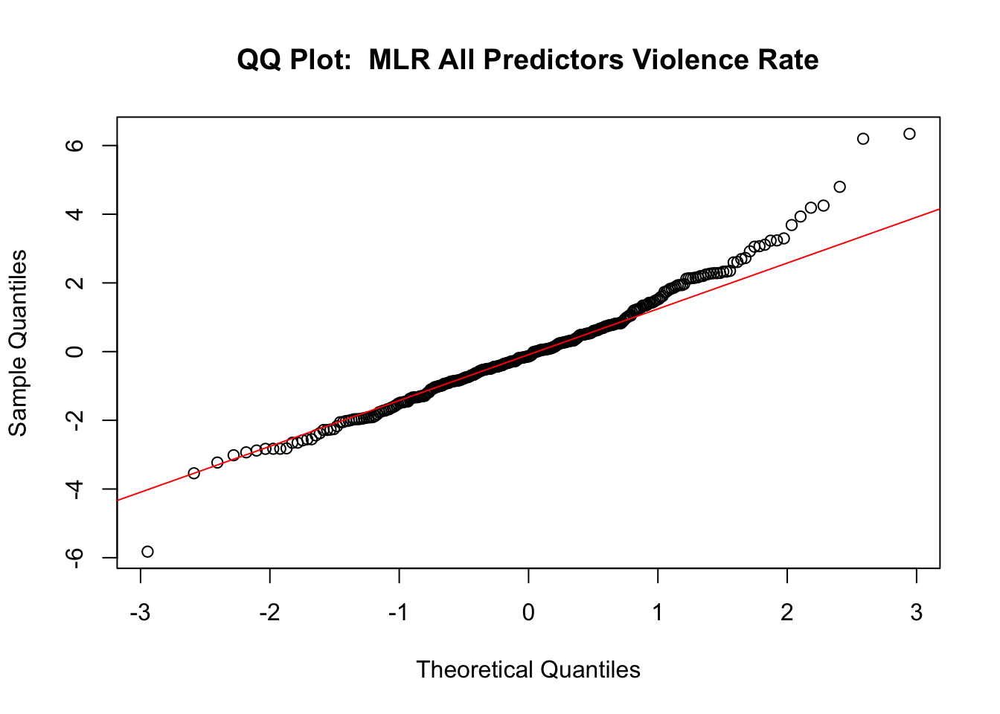
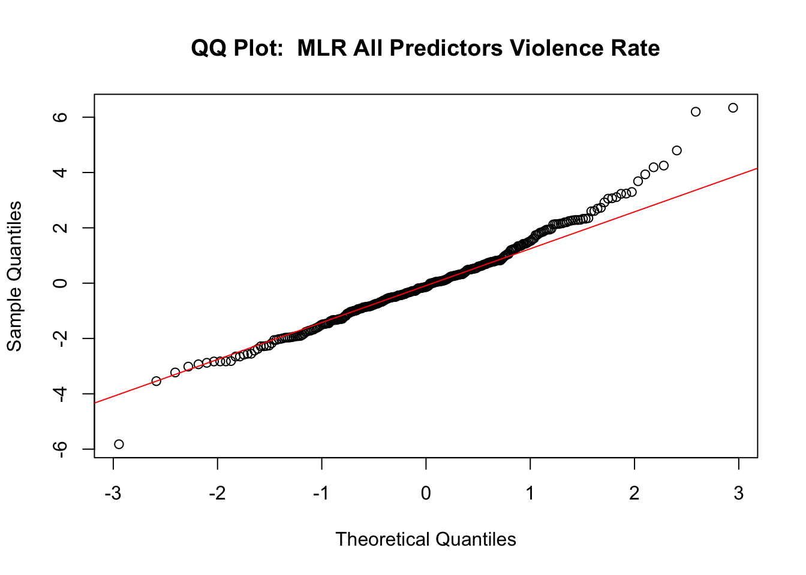
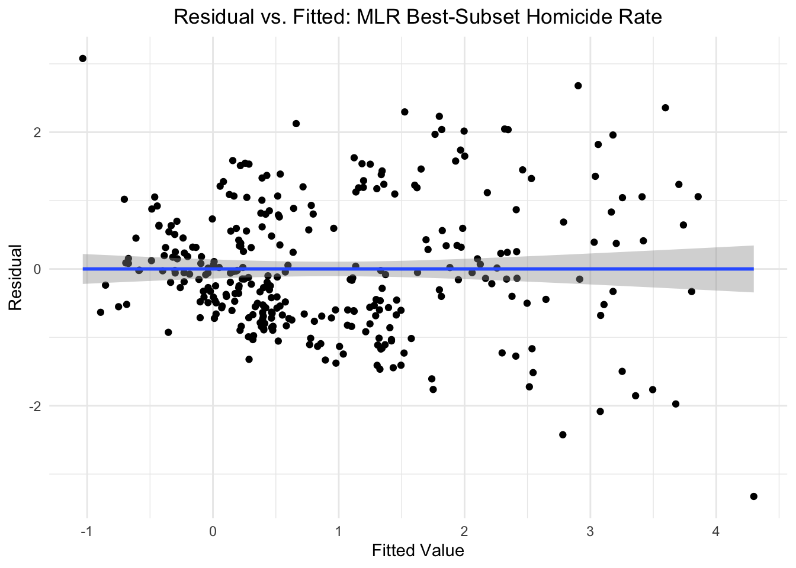
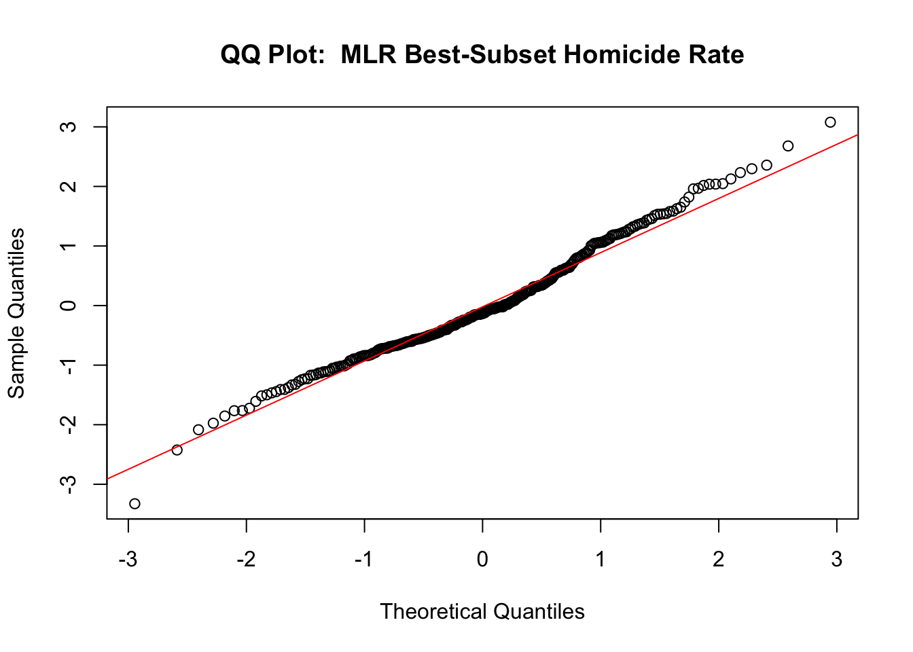
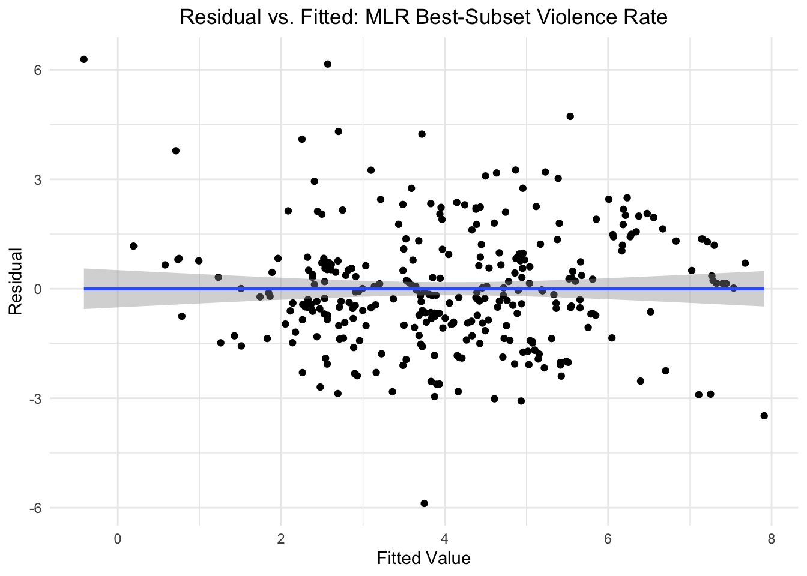
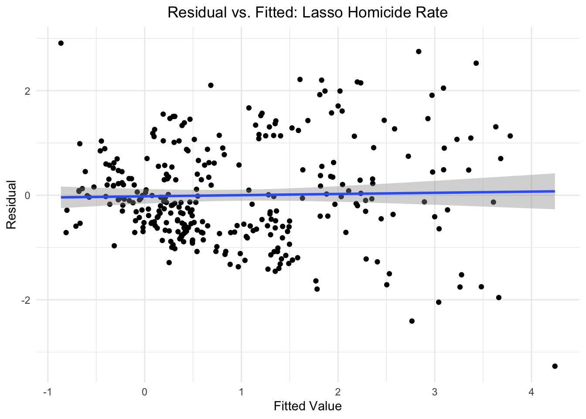
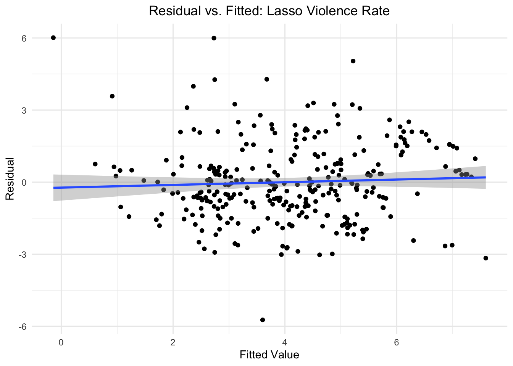

Regression
Background
Our motivation for doing regression is to determine the significant predictors of the two measures of violence: (1) homicide victim rate and (2) violent offences rate.
Global violence is a complex issue, depending on many factors, from political, cultural, to economic. We aimed to choose predictors that reflect inequality which are often related to social unrest and violence. Much numerical data exists for the economic indicators of a country such as GDP, inflation and unemployment rate, and we also wanted to include HDI since that in itself is a well-recognized global measurement. Intuitively, criminal activity is also related to violence, so indicators for economic crime rate and criminal justice personnel were considered. Lastly, alcohol rate was included because substance usage is often perceived to be correlated with violence. Subsequently, we aim to develop models that show which factors are the best predictors of homicide and violence rates.
Given the plausible theoretical linkage between each of our included predictor variables and the outcome variables of interest, we seek to develop models that can determine which factors are most predictive of homicide and violence rate.
We performed this analysis to uncover the extent to which different factors influence homicide rate and violence rate as outcomes.
Functions for Fitting Data
best_subset
best_subset = function(predictor, outcome, criterion) {
optimal_subset <-
leaps(x = predictor, y = outcome, nbest = 3,
method = criterion, names = names(predictor))
if (criterion == "Cp") {
optimal_criterion <- optimal_subset[[criterion]] %>% min()
optimal_subset_idx <- optimal_subset[[criterion]] %>% which.min()
} else {
optimal_criterion <- optimal_subset[[criterion]] %>% max()
optimal_subset_idx <- optimal_subset[[criterion]] %>% which.max()
}
return(list(Criterion = optimal_criterion ,
Variable_Selection = optimal_subset$which[optimal_subset_idx,]))
}This function serves as a wrapper around the leaps function. It performs best-subset variable selection and then prints out the optimal model diagnostic and the predictor variables included in the regression model.
fit_glmnet
fit_glmnet = function(df, alpha, outcome, lambda) {
outcome_formula <- as.formula(paste(outcome, "~."))
predictor <- model.matrix(outcome_formula, data = df)[,-1]
predicted <- df %>% pull(outcome)
model_fit <-
glmnet(predictor, predicted, lambda = lambda, alpha = alpha)
model_cv <-
cv.glmnet(predictor, predicted, lambda = lambda, alpha = alpha)
lambda_opt = model_cv[["lambda.min"]]
model_fit <-
glmnet(predictor, predicted, lambda = lambda_opt, alpha = alpha)
return(model_fit)
}This function serves as a wrapper for the glmnet fitting processing and covers both the fitting and cross-validation process. It returns the glmnet object produced after fitting with optimal lambda value.
rmse_glmnet
rmse_glmnet = function(model, test, outcome) {
outcome_formula <- as.formula(paste(outcome, "~."))
predictor <- model.matrix(outcome_formula, data = test)[,-1]
predictions <- predict.glmnet(model, model[["lambda"]], newx = predictor,
type = "response")
predictions <- as.vector(predictions)
observed <- test %>%
pull(outcome)
return(caret::RMSE(predictions, observed))
}This is a wrapper function for the glmnet prediction and evaluation process. Given a fitted glmnet model, a test dataset, and an outcome variable of interest, this function predicts the avlues in the test dataset and then calculates and returns the rmse.
check_model
check_model = function(data, name) {
resid_fit =
data |>
ggplot(aes(y = resid, x = pred)) +
geom_point() +
geom_smooth(method = "lm") +
labs(title = paste("Residual vs. Fitted:", name),
y = "Residual",
x = "Fitted Value")
print(resid_fit)
qqnorm(pull(data, resid), main = paste("QQ Plot: ", name))
qqline(pull(data, resid), col = "red")
}This is a plotting function to combine several different plot types that assess the assumptions of linear models.
Descriptive Statistics
Visualizations of Distributions

All variables are skewed right, except for HDI which is bimodal and slightly left-skewed. Hence, we decided to apply ln transformations and Box-Cox transformations to ensure normality of the data.
Data Transformations
Natural Log Transform
ln_transform = function(value) {
return(log(abs(value)))
}
ln_df =
merged_violence_df |>
mutate(across(c(homicide_rate:alcohol_consumption_rate),
ln_transform))
ln_df |>
select(homicide_rate:alcohol_consumption_rate) |>
ggpairs()
Box-Cox Transform
boxcox_transform = function(value) {
if (all(is.na(value))) {
return(value)
}
min_value = min(value, na.rm = TRUE)
if (min_value <= 0) {
value = value + abs(min_value) + 0.00001
}
if (length(unique(value)) == 1) {
return(value)
}
boxcox_result = MASS::boxcox(value ~ 1, plotit = FALSE)
lambda = boxcox_result$x[which.max(boxcox_result$y)]
if(lambda != 0) {
transformed_value = (value^lambda - 1) / lambda
} else {
transformed_value = log(value)
}
return(transformed_value)
}
boxcox_df = merged_violence_df |>
mutate(across(c(homicide_rate:alcohol_consumption_rate),
~ boxcox_transform(.)))
boxcox_df |>
select(homicide_rate:alcohol_consumption_rate) |>
ggpairs()
Both natural log and boxcox transformations substantially normalized the distributions. Since boxcox resulted in more improved results as shown in the plots above, we decided to use the boxcox transformed data for regression.
Multicolliniearity Diagnostics
We used cor() to find the correlation between the eight
predictors of homicide rate and violence.
cor_matrix =
cor(boxcox_df[, c("gdp", "inflation_rate", "unemployment_rate", "hdi",
"economic_crime_rate", "personnel_rate", "trafficked_victims",
"alcohol_consumption_rate")], use = "pairwise.complete.obs")
ggcorrplot(cor_matrix,
method = "circle",
type = "lower",
lab = TRUE,
lab_size = 3,
colors = c("blue", "white", "red"), # Color scale (blue = negative, red = positive)
title = "Correlation Heatmap"
)
There is moderate correlation between hdi and
alcohol_consumption_rate (corr = 0.56), hdi
and economic_crime_rate (corr = 0.57), and gdp
and trafficked_victims (corr - 0.51).
Data Pre-Processing
Define Lambda Range
lambda = 10^(seq(-2, 2.75, 0.1))Approach to Pre-Processing Data
Prior to performing any model fitting, we split our initial dataset into separate homicide and violence datasets, each of which includes the outcome variable and all numeric predictor variables. Specific predictor and outcome dataframes, and an outcome matrix, are created for later use in linear models, as well as lasso.
Pre-Processing for Homicide
homicide_df =
boxcox_df |>
ungroup() |>
select(-violence_rate, -year, -country, -region, -iso3_code) |>
drop_na()
homicide_matrix <- model.matrix(homicide_rate ~., data = homicide_df)[,-1]
homicide_predictors <- homicide_df %>%
select(-homicide_rate)
homicide_outcome <- homicide_df %>%
pull(homicide_rate)Pre-Processing for Violence
violence_df =
boxcox_df |>
ungroup() |>
select(-year, -homicide_rate, -country, -region, -iso3_code) |>
drop_na()
violence_matrix <- model.matrix(violence_rate ~., data = violence_df)[,-1]
violence_predictors <- violence_df %>%
select(-violence_rate)
violence_outcome <- violence_df %>%
pull(violence_rate)Baseline MLR with Additive Effects
First, we decided to fit a baseline MLR with additive effects from
all possible predictor variables to use as a point of reference for our
modeling process. This step provides insight into which
covariates contribute to the outcomes of interest.
Predict Homicide Rates
baseline_MLR_hom <- lm(homicide_rate ~ gdp + inflation_rate + unemployment_rate +
hdi + economic_crime_rate + personnel_rate + trafficked_victims +
alcohol_consumption_rate , data = homicide_df)
baseline_MLR_hom_fitted <- baseline_MLR_hom[["fitted.values"]]
baseline_MLR_hom %>%
broom::tidy() %>%
knitr::kable()| term | estimate | std.error | statistic | p.value |
|---|---|---|---|---|
| (Intercept) | -3.9032006 | 1.4399630 | -2.7106255 | 0.0071011 |
| gdp | 0.0299927 | 0.0541667 | 0.5537121 | 0.5801870 |
| inflation_rate | 0.0795285 | 0.0844521 | 0.9416997 | 0.3471015 |
| unemployment_rate | -0.0988592 | 0.0930715 | -1.0621849 | 0.2890032 |
| hdi | -18.4277564 | 1.4752699 | -12.4911086 | 0.0000000 |
| economic_crime_rate | 0.1235555 | 0.0231158 | 5.3450640 | 0.0000002 |
| personnel_rate | 0.1026731 | 0.0272480 | 3.7681001 | 0.0001979 |
| trafficked_victims | -0.0156416 | 0.0821390 | -0.1904282 | 0.8491019 |
| alcohol_consumption_rate | -0.0105024 | 0.0307245 | -0.3418237 | 0.7327221 |
Results from baseline MLR show that that HDI, economic crime rate and personnel rate are significant predictors of homicide.
Collinearity of Baseline Homicide Model
vif_baseline_hom_MLR <- car::vif(baseline_MLR_hom)
vif_baseline_hom_MLR %>%
tibble(
variable = names(vif_baseline_hom_MLR),
VIF = vif_baseline_hom_MLR
) %>%
select(variable, VIF) %>%
knitr::kable()| variable | VIF |
|---|---|
| gdp | 3.092922 |
| inflation_rate | 1.163745 |
| unemployment_rate | 1.176497 |
| hdi | 4.019360 |
| economic_crime_rate | 2.158875 |
| personnel_rate | 1.249265 |
| trafficked_victims | 2.189643 |
| alcohol_consumption_rate | 2.086040 |
Results from VIF show that there is no serious multicollinearity issue (VIF < 5).
Predict Violence Rates
baseline_MLR_viol <- lm(violence_rate ~ gdp + inflation_rate + unemployment_rate +
hdi + economic_crime_rate + personnel_rate + trafficked_victims +
alcohol_consumption_rate , data = violence_df)
baseline_MLR_viol_fitted <- baseline_MLR_viol[["fitted.values"]]
baseline_MLR_viol %>%
broom::tidy() %>%
knitr::kable()| term | estimate | std.error | statistic | p.value |
|---|---|---|---|---|
| (Intercept) | -7.2867592 | 2.4450455 | -2.9802141 | 0.0031153 |
| gdp | 0.3805697 | 0.0919746 | 4.1377720 | 0.0000456 |
| inflation_rate | -0.3288844 | 0.1433989 | -2.2934927 | 0.0225086 |
| unemployment_rate | -0.3365298 | 0.1580347 | -2.1294676 | 0.0340269 |
| hdi | -5.2981027 | 2.5049963 | -2.1150142 | 0.0352503 |
| economic_crime_rate | 0.4300738 | 0.0392505 | 10.9571663 | 0.0000000 |
| personnel_rate | 0.0553427 | 0.0462668 | 1.1961629 | 0.2325744 |
| trafficked_victims | -0.0960016 | 0.1394713 | -0.6883249 | 0.4917783 |
| alcohol_consumption_rate | -0.1815850 | 0.0521699 | -3.4806480 | 0.0005742 |
Results from MLR show that gdp,
inflation_rate, unemployment_rate,
hdi, economic_crime_rate, and
alcohol_consumption_rate are significant predictors of
violence rate \(\alpha\) = 0.01.
Collinearity of Baseline Violence Model
vif_baseline_viol_MLR <- car::vif(baseline_MLR_viol)
vif_baseline_viol_MLR %>%
tibble(
variable = names(vif_baseline_viol_MLR),
VIF = vif_baseline_viol_MLR
) %>%
select(variable, VIF) %>%
knitr::kable()| variable | VIF |
|---|---|
| gdp | 3.092922 |
| inflation_rate | 1.163745 |
| unemployment_rate | 1.176497 |
| hdi | 4.019360 |
| economic_crime_rate | 2.158875 |
| personnel_rate | 1.249265 |
| trafficked_victims | 2.189643 |
| alcohol_consumption_rate | 2.086040 |
Results from VIF show that there is no serious multicollinearity issue (VIF < 5).
Lasso
We used lasso to as a feature selection tool to find the most important variables in predicting homicide rate and violence rate.
Predictors for Violence Rate
lasso_violence_fit =
glmnet(violence_matrix, violence_outcome, lambda = lambda)
lasso_violence_cv =
cv.glmnet(violence_matrix, violence_outcome, lambda = lambda)
lambda_violence_opt =
lasso_violence_cv[["lambda.min"]]
lasso_violence_fit =
glmnet(violence_matrix, violence_outcome, lambda = lambda_violence_opt)
lasso_violence_fit |>
broom::tidy() |>
knitr::kable()| term | step | estimate | lambda | dev.ratio |
|---|---|---|---|---|
| (Intercept) | 1 | -5.0456542 | 0.0398107 | 0.4726878 |
| gdp | 1 | 0.2945710 | 0.0398107 | 0.4726878 |
| inflation_rate | 1 | -0.2342246 | 0.0398107 | 0.4726878 |
| unemployment_rate | 1 | -0.2542552 | 0.0398107 | 0.4726878 |
| hdi | 1 | -2.3970548 | 0.0398107 | 0.4726878 |
| economic_crime_rate | 1 | 0.3989004 | 0.0398107 | 0.4726878 |
| personnel_rate | 1 | 0.0392525 | 0.0398107 | 0.4726878 |
| alcohol_consumption_rate | 1 | -0.1775654 | 0.0398107 | 0.4726878 |
lasso_predict_violence <-
predict.glmnet(lasso_violence_fit, lambda_violence_opt,
newx = violence_matrix, type = "response")
lasso_predict_violence <- as.vector(lasso_predict_violence)
lasso_violence_resid <- tibble(
residuals = violence_outcome - lasso_predict_violence
)The optimal lambda for violence rate is 0.04.
Predictors for Homicide Rate
lasso_homicide_fit =
glmnet(homicide_matrix, homicide_outcome, lambda = lambda)
lasso_homicide_cv =
cv.glmnet(homicide_matrix, homicide_outcome, lambda = lambda)
lambda_homicide_opt =
lasso_homicide_cv[["lambda.min"]]
lasso_homicide_fit =
glmnet(homicide_matrix, homicide_outcome, lambda = lambda_homicide_opt)
lasso_homicide_fit |>
broom::tidy() |>
knitr::kable()| term | step | estimate | lambda | dev.ratio |
|---|---|---|---|---|
| (Intercept) | 1 | -3.3086665 | 0.0125893 | 0.5730228 |
| gdp | 1 | 0.0116957 | 0.0125893 | 0.5730228 |
| inflation_rate | 1 | 0.0677735 | 0.0125893 | 0.5730228 |
| unemployment_rate | 1 | -0.0806099 | 0.0125893 | 0.5730228 |
| hdi | 1 | -17.7625394 | 0.0125893 | 0.5730228 |
| economic_crime_rate | 1 | 0.1134648 | 0.0125893 | 0.5730228 |
| personnel_rate | 1 | 0.0960788 | 0.0125893 | 0.5730228 |
| alcohol_consumption_rate | 1 | -0.0068625 | 0.0125893 | 0.5730228 |
lasso_predict_homicide <-
predict.glmnet(lasso_homicide_fit, lambda_homicide_opt,
newx = homicide_matrix, type = "response")
lasso_predict_homicide <- as.vector(lasso_predict_homicide)
lasso_homicide_resid <- tibble(
residuals = homicide_outcome - lasso_predict_homicide
)The optimal lambda for homicide rate is 0.01.
Criterion-Based Procedure
Best-Subset Regression for Violence
Predict Violence Rate with R-Squared
violence_best_subset_rsq <-
best_subset(predictor = violence_predictors, outcome = violence_outcome,
criterion = "adjr2")
violence_best_subset_rsq## $Criterion
## [1] 0.4649232
##
## $Variable_Selection
## gdp inflation_rate unemployment_rate
## TRUE TRUE TRUE
## hdi economic_crime_rate personnel_rate
## TRUE TRUE TRUE
## trafficked_victims alcohol_consumption_rate
## FALSE TRUEPredict Violence Rate with Cp
violence_best_subset_Cp <-
best_subset(predictor = violence_predictors, outcome = violence_outcome,
criterion = "Cp")
violence_best_subset_Cp## $Criterion
## [1] 6.942997
##
## $Variable_Selection
## gdp inflation_rate unemployment_rate
## TRUE TRUE TRUE
## hdi economic_crime_rate personnel_rate
## TRUE TRUE FALSE
## trafficked_victims alcohol_consumption_rate
## FALSE TRUECollinearity of Best-Subset Violence Model
subset_violence_lm <- lm(violence_rate ~ gdp + inflation_rate + unemployment_rate + hdi + economic_crime_rate + personnel_rate + alcohol_consumption_rate, data = violence_df)
summary(subset_violence_lm)##
## Call:
## lm(formula = violence_rate ~ gdp + inflation_rate + unemployment_rate +
## hdi + economic_crime_rate + personnel_rate + alcohol_consumption_rate,
## data = violence_df)
##
## Residuals:
## Min 1Q Median 3Q Max
## -5.8827 -0.9624 -0.1570 0.8284 6.2878
##
## Coefficients:
## Estimate Std. Error t value Pr(>|t|)
## (Intercept) -6.31311 1.99260 -3.168 0.001690 **
## gdp 0.33523 0.06413 5.227 3.22e-07 ***
## inflation_rate -0.33153 0.14322 -2.315 0.021293 *
## unemployment_rate -0.33631 0.15790 -2.130 0.033985 *
## hdi -4.54750 2.25322 -2.018 0.044452 *
## economic_crime_rate 0.43184 0.03913 11.035 < 2e-16 ***
## personnel_rate 0.05607 0.04621 1.213 0.226015
## alcohol_consumption_rate -0.19195 0.04991 -3.846 0.000146 ***
## ---
## Signif. codes: 0 '***' 0.001 '**' 0.01 '*' 0.05 '.' 0.1 ' ' 1
##
## Residual standard error: 1.627 on 302 degrees of freedom
## Multiple R-squared: 0.477, Adjusted R-squared: 0.4649
## F-statistic: 39.36 on 7 and 302 DF, p-value: < 2.2e-16subset_violence_fitted <- subset_violence_lm[["fitted.values"]]
vif_subset_violence_model <- car::vif(subset_violence_lm)
vif_subset_violence_model %>%
tibble(
variable = names(vif_subset_violence_model),
VIF = vif_subset_violence_model
) %>%
select(variable, VIF) %>%
knitr::kable()| variable | VIF |
|---|---|
| gdp | 1.506510 |
| inflation_rate | 1.162907 |
| unemployment_rate | 1.176492 |
| hdi | 3.257676 |
| economic_crime_rate | 2.149680 |
| personnel_rate | 1.248621 |
| alcohol_consumption_rate | 1.912238 |
All variables have VIF value below 5, suggesting that there is no multi-colinearity concerns.
Interpretation
The results from both criterion-based procedures suggest that
significant predictors for violence_rate are
gdp, inflation_rate,
unemployment_rate, economic_crime_rate,
personnel_rate, hdi and
alcohol_consumption rate, with a total of 7 predictors.
This yields the most appropriate Cp value (6.94), which is approximately
close to the number of predictors, and highest adjusted R-squared
(0.46).
Best Subset Regression for Homicide
Predict Homicide Rate with R-Squared
homicide_best_subset_rsq <-
best_subset(predictor = homicide_predictors, outcome = homicide_outcome,
criterion = "adjr2")
homicide_best_subset_rsq## $Criterion
## [1] 0.5660305
##
## $Variable_Selection
## gdp inflation_rate unemployment_rate
## FALSE FALSE TRUE
## hdi economic_crime_rate personnel_rate
## TRUE TRUE TRUE
## trafficked_victims alcohol_consumption_rate
## FALSE FALSEPredict Homicide Rate with Cp
homicide_best_subset_Cp <-
best_subset(predictor = homicide_predictors, outcome = homicide_outcome,
criterion = "Cp")
homicide_best_subset_Cp## $Criterion
## [1] 2.512865
##
## $Variable_Selection
## gdp inflation_rate unemployment_rate
## FALSE FALSE FALSE
## hdi economic_crime_rate personnel_rate
## TRUE TRUE TRUE
## trafficked_victims alcohol_consumption_rate
## FALSE FALSECollinearity of Best-Subset Homicide Model
subset_homicide_lm <- lm(homicide_rate ~ unemployment_rate + hdi +
economic_crime_rate + personnel_rate,
data = homicide_df)
summary(subset_homicide_lm)##
## Call:
## lm(formula = homicide_rate ~ unemployment_rate + hdi + economic_crime_rate +
## personnel_rate, data = homicide_df)
##
## Residuals:
## Min 1Q Median 3Q Max
## -3.3265 -0.6331 -0.1335 0.5938 3.0783
##
## Coefficients:
## Estimate Std. Error t value Pr(>|t|)
## (Intercept) -3.02937 0.34997 -8.656 2.87e-16 ***
## unemployment_rate -0.12063 0.08725 -1.383 0.167818
## hdi -18.50047 1.02730 -18.009 < 2e-16 ***
## economic_crime_rate 0.12511 0.02286 5.474 9.21e-08 ***
## personnel_rate 0.09847 0.02671 3.687 0.000268 ***
## ---
## Signif. codes: 0 '***' 0.001 '**' 0.01 '*' 0.05 '.' 0.1 ' ' 1
##
## Residual standard error: 0.9551 on 305 degrees of freedom
## Multiple R-squared: 0.5716, Adjusted R-squared: 0.566
## F-statistic: 101.8 on 4 and 305 DF, p-value: < 2.2e-16subset_homicide_fitted <- subset_homicide_lm[["fitted.values"]]
vif_subset_homicide_model <- car::vif(subset_homicide_lm)
vif_subset_homicide_model %>%
tibble(
variable = names(vif_subset_homicide_model),
VIF = vif_subset_homicide_model
) %>%
select(variable, VIF) %>%
knitr::kable()| variable | VIF |
|---|---|
| unemployment_rate | 1.042179 |
| hdi | 1.964320 |
| economic_crime_rate | 2.127143 |
| personnel_rate | 1.209558 |
All variables have VIF value below 5, suggesting that there is no multi-colinearity issue.
Interpretation
For homicide_rate, the results are not as
straightforward. The best model based on R-squared (0.57) is the model
with unemployment_rate, hdi,
economic_crime_rate and personnel_rate as
predictors. Howeover, based on the Cp criterion (2.51), it’s the model
with hdi, economic_crime_rate and
personnel_rate.
Subsequently, we will choose four predictors since it has a relatively high adjusted R-Squared (0.57) and we were interested in a model that explains more variation in violence rates.
Model Comparison
Create Training and Testing Datasets
cv_df_violence <-
modelr::crossv_mc(violence_df, 100)
cv_df_violence <- cv_df_violence %>%
mutate(
train = map(train, as_tibble),
test = map(test, as_tibble)
)
cv_df_homicide <-
modelr::crossv_mc(homicide_df, 100)
cv_df_homicide <- cv_df_homicide %>%
mutate(
train = map(train, as_tibble),
test = map(test, as_tibble)
)Fit Models
Violence
cv_df_violence <-
cv_df_violence %>%
mutate(
MLR_all_var = map(train, \(df) lm(violence_rate ~ ., data = df)),
MLR_best_subset = map(train, \(df) lm(violence_rate ~ gdp + inflation_rate +
unemployment_rate + hdi + economic_crime_rate + personnel_rate +
alcohol_consumption_rate, data = df)),
lasso = map(train, \(df) fit_glmnet(df, outcome = "violence_rate",
alpha = 1,lambda = lambda))
) %>%
mutate(
rmse_all_var = map2_dbl(
MLR_all_var, test, \(mod, test) rmse(model = mod, data = test)),
rmse_best_subset = map2_dbl(
MLR_best_subset, test, \(mod, test) rmse(model = mod, data = test)),
rmse_lasso = map2_dbl(
lasso, test, \(mod, test) rmse_glmnet(mod, test, "violence_rate"))
) %>%
select(starts_with("rmse_"))Homicide
cv_df_homicide <-
cv_df_homicide %>%
mutate(
MLR_all_var = map(train, \(df) lm(homicide_rate ~ ., data = df)),
MLR_best_subset = map(train, \(df) lm(homicide_rate ~ unemployment_rate +
personnel_rate + hdi + economic_crime_rate,
data = df)),
lasso = map(train, \(df) fit_glmnet(df, outcome = "homicide_rate",
alpha = 1,lambda = lambda))
) %>%
mutate(
rmse_all_var = map2_dbl(
MLR_all_var, test, \(mod, test) rmse(model = mod, data = test)),
rmse_best_subset = map2_dbl(
MLR_best_subset, test, \(mod, test) rmse(model = mod, data = test)),
rmse_lasso = map2_dbl(
lasso, test, \(mod, test) rmse_glmnet(mod, test, "homicide_rate"))
) %>%
select(starts_with("rmse_"))Comparing the RMSE
Violence
cv_df_violence %>%
pivot_longer(
everything(),
names_to = "Model",
values_to = "RMSE",
names_prefix = "rmse_"
) %>%
mutate(
Model = fct_inorder(Model)
) %>%
ggplot(aes(x = Model, y = RMSE)) +
geom_violin() +
ggtitle("RMSE by Model for Predicting Violence Rate") +
theme(plot.title = element_text(hjust = 0.5))
Examining the distribution of RMSEs for each of the 3 models for predicting violence rate, we see that they are relatively similar. It appears that the MLR including all predictor variables has greater spread in lower RMSE values compared to the other two models.
The similarity in performance among all 3 models likely relates to the few number of predictor variables that exist in our studied dataset. In general, each of the 3 models will not differ by many predictor variables, and therefore perform similarly. Comparing the 3 models, the best subset regression model may be considered optimal as it reduces model complexity, without the caveat of difficulty interpreting beta coefficients, which occurs with lasso models.
Homicide
cv_df_homicide %>%
pivot_longer(
everything(),
names_to = "Model",
values_to = "RMSE",
names_prefix = "rmse_"
)%>%
mutate(
Model = fct_inorder(Model)
) %>%
ggplot(aes(x = Model, y = RMSE)) +
geom_violin() +
ggtitle("RMSE by Model for Predicting Homicide Rate") +
theme(plot.title = element_text(hjust = 0.5))
Examining the 3 models we used to predict homicide rate, we see that the distribution of RMSE across 100-fold cross-validation are nearly identical. This is likely in regard to the few predictor variables included in our dataset. In particular, with such few predictor variables, lasso is likely not the most well-suited for this task, since there is not a serious need to reduce model complexity. Consequently, the number of variables included in each of the 3 models is similar, and the difference of 1 or 2 included predictors between each of the models does not produce a substantial change in model effectiveness. Comparing the 3 models, the best subset regression model may be considered the best as it reduces model complexity but maintains ease of interpretationof beta coefficients, having a slightly greater spread in lower RMSE values compared to the other two models, which is not as noticeable.
Model Diagnostics
All Variables included MLR
baseline_hom_resid_df =
homicide_df |>
add_residuals(baseline_MLR_hom) |>
add_predictions(baseline_MLR_hom)
baseline_viol_resid_df =
violence_df |>
add_residuals(baseline_MLR_viol) |>
add_predictions(baseline_MLR_viol)
check_model(baseline_hom_resid_df, "MLR All Predictors Homicide Rate") 

check_model(baseline_viol_resid_df, "MLR All Predictors Violence Rate") 
Examining the QQ-plots for the MLRs with all predictor variables
included, we notice that our assumption of normality of residuals may be
violated, as there are many lower-bound and upper-bound outliers that do
not fall along the reference line. For the plots of fitted values versus
residuals, we see differing results based on whether homicide rate or
violence rate is the outcome variable. With homicide as the outcome
variable, we can see residuals oscillate above and below the reference
line, indicating approximate linearity of the relationship between the
predictors and the outcome variables. However, the greater variability
in the residuals as fitted values increase, suggests that we are seeing
heteroscedasticity. Regarding violence rate as the outcome variable, we
see both issues with heteroscedasticity and linearity.

Examining the QQ-plots for the MLRs with all predictor variables
included, we notice that our assumption of normality of residuals may be
violated, as there are many lower-bound and upper-bound outliers that do
not fall along the reference line. For the plots of fitted values versus
residuals, we see differing results based on whether homicide rate or
violence rate is the outcome variable. With homicide as the outcome
variable, we can see residuals oscillate above and below the reference
line, indicating approximate linearity of the relationship between the
predictors and the outcome variables. However, the greater variability
in the residuals as fitted values increase, suggests that we are seeing
heteroscedasticity. Regarding violence rate as the outcome variable, we
see both issues with heteroscedasticity and linearity.
Best Subset MLR
subset_homicide_resid_df =
homicide_df |>
add_residuals(subset_homicide_lm) |>
add_predictions(subset_homicide_lm)
subset_violence_resid_df =
violence_df |>
add_residuals(subset_violence_lm) |>
add_predictions(subset_violence_lm)
check_model(subset_homicide_resid_df, "MLR Best-Subset Homicide Rate")
check_model(subset_violence_resid_df, "MLR Best-Subset Violence Rate")
Examining the QQ-plots for the MLRs using the best-subset of predictor variables, we once again notice that our assumption of normality of residuals may be in violation, as there appear to many lower-bound and upper-bound outliers that do not fall along the reference line. For the fitted versus residuals plot for homicide rate, we see violations of both linearity and homosecdascity. The equivalent plot for violence rate presents similar concerns regarding homoscedascity, but shows a greater spread of residuals along the horizontal reference line, and therefore better implies linearity of relationship between predictor variables and outcome.
Lasso
lasso_homicide_resid_df =
lasso_homicide_resid |>
pull(residuals) |>
bind_cols(lasso_predict_homicide) |>
rename(resid = "...1", pred = "...2")
lasso_violence_resid_df =
lasso_violence_resid |>
pull(residuals) |>
bind_cols(lasso_predict_violence) |>
rename(resid = "...1", pred = "...2")
check_model(lasso_homicide_resid_df, "Lasso Homicide Rate")
check_model(lasso_violence_resid_df, "Lasso Violence Rate")
Consistent with results from the QQ-plots of the previous two MLR models, lasso models for both homicide rate and violence rate show potential violations of the assumption of normality, as many lower-bound and upper-bound outlier residuals do not fall along the reference line. For the fitted versus residuals plot of homicide and violence rates, we see a very low possibility of heteroscedascity and non-linearity, since the horizontal line crosses the value of zero, but this acceptable since this deviation is very insignificant.
Conclusion
Based on our comparisons of RMSE, we can conclude that our best-subset regression models are most accurate at predicting the outcomes: (1) Violence Rate and (2) Homicide Rate.
The best-subset regression model for predicting violence rate yielded an adjusted r-squared of 0.46 and included the following variables as predictors: GDP, inflation rate, economic crime rate, hdi, unemployment rate, personnel rate, and alcohol consumption rate. The best-subset regression model for predicting homicide rate returned an r-squared of 0.57. The variables included in this model were unemployment rate, HDI, economic crime rate and personnel rate.
Below are some important interpretations of our findings, based on the best-subset regression model for predicting homicide rate:
HDI (Coefficient = -18.50047), p-value < 2e-16: A 1-unit increase in the HDI results in a decrease of 18.50047 units in the transformed homicide rate, holding all other variables constant. Since the p-value is very small, HDI has a strong negative effect on the transformed homicide rate.
Economic Crime Rate (Coefficient = 0.12511, p-value = 9.21e-08): A 1-unit increase in transformed economic crime rate results in an increase of 0.12511 units in transformed homicide rate, holding all other variables constant. The p-value is very small, indicating statistical significance.
Personnel Rate (Coefficient = 0.09847, p-value = 0.000268): A 1-unit increase in transformed personnel rate results in an increase of 0.09847 units in the transformed homicide rate, holding other predictors constant. The small p-value (0.000268) also makes this effect statistically significant. This is rather surprising, because we believed an increase in personnel rate should decrease homicide rate. However, because personnel rate is a variable that also includes judges, this result might make sense.
Here are some of our important findings based on the best-subset regression model for predicting violence rate:
Economic Crime Rate (coefficient: 0.43184, p-value: < 2e-16) A 1-unit increase in the transformed economic crime rate results in an increase of 0.43184 units in the transformed violence rate, holding all other variables constant. The p-value is extremely small, indicating a significant relationship. This is consistent with the model predicting homicide rate.
GDP (coefficient: 0.33523, p-value: 3.22e-07) A 1-unit increase in transformed GDP results in an increase of 0.33523 units in the transformed violence rate, holding all other variables constant. The p-value is very small, suggesting statistical significance. The association between economic growth and violence is surprising because we might previously associate higher crime with countries with lower GDP. However, these results may suggest that GDP growth can exacerbate inequality and drive violence.
Alcohol Consumption Rate (coefficient: -0.19195, p-value: 0.000146) A 1-unit increase in transformed alcohol consumption rate results in a decrease of 0.19195 units in the transformed violence rate, holding all other variables constant. The p-value is small (0.000146), indicating statistical significance. This result was also unexpected because we previously believed higher alcohol consumption would lead to an increase in violence, since it’s associated with aggression, mood and personality disorders). This might be due to limitations in our data quality.